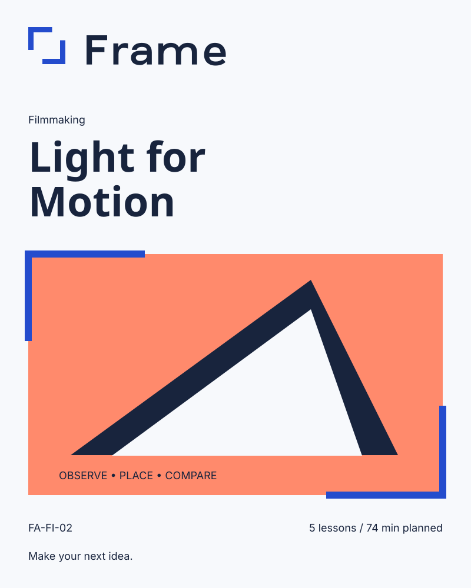

Light for Motion
A practice companion
Five spaces to try, observe and reflect. These are authored workbook prompts, rather than produced videos or a locked lesson-name sequence.
Observe available light
Try the exercise
Record how one object changes beside a window at two times of day.
What changed?
My next decision
Compare light direction
Try the exercise
Make a short shot with side light and another with front light. Compare shadow and form.
What changed?
My next decision
Shape contrast
Try the exercise
Place a white sheet beside your subject. Record the scene with and without it.
What changed?
My next decision
Keep light through motion
Try the exercise
Move the camera slowly while keeping the subject within the same light. Note what changes.
What changed?
My next decision
Make a light study
Try the exercise
Sequence three short shots with a consistent light direction. Explain your choice.